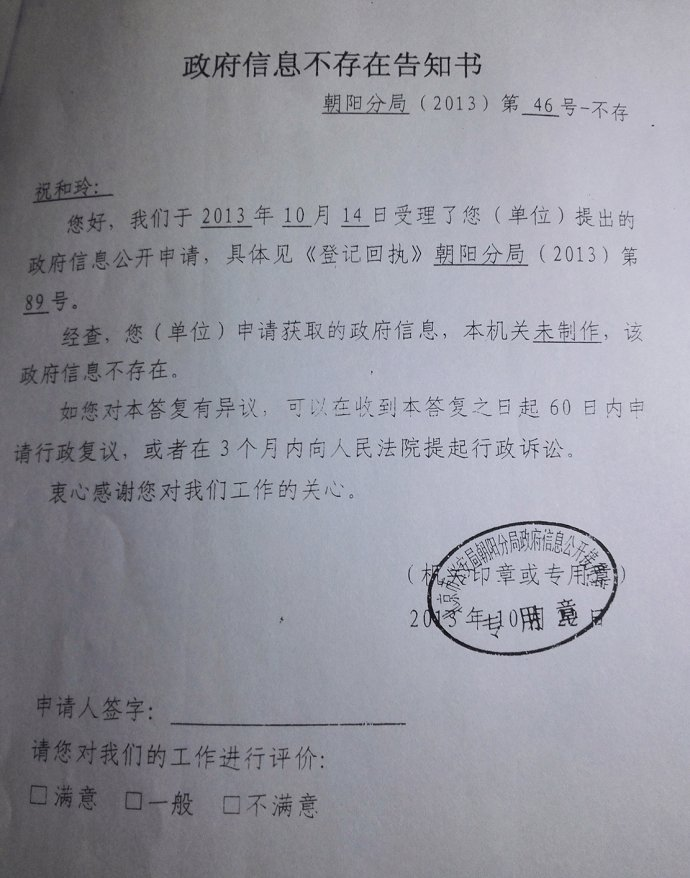
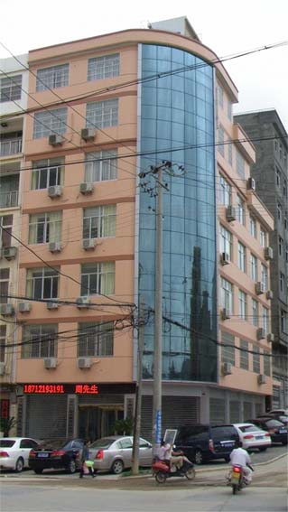
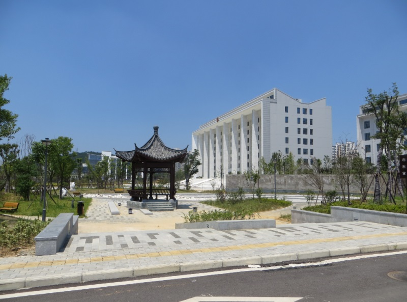
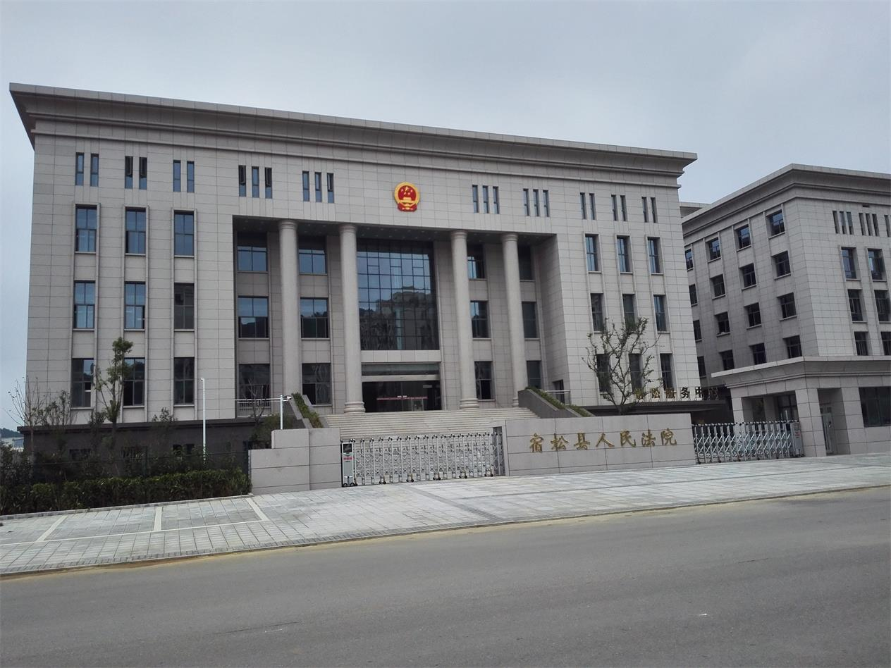
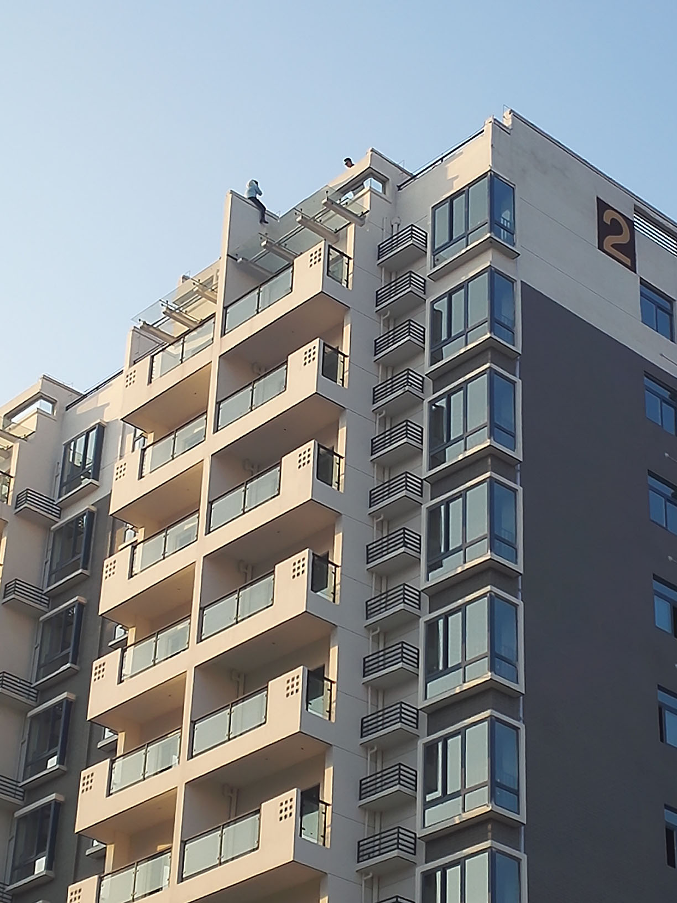
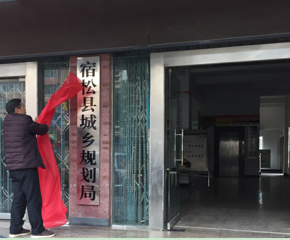
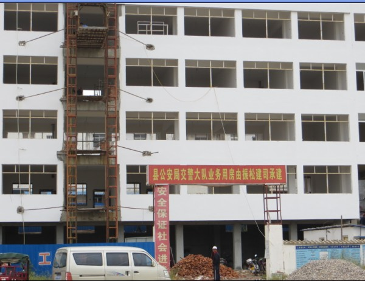
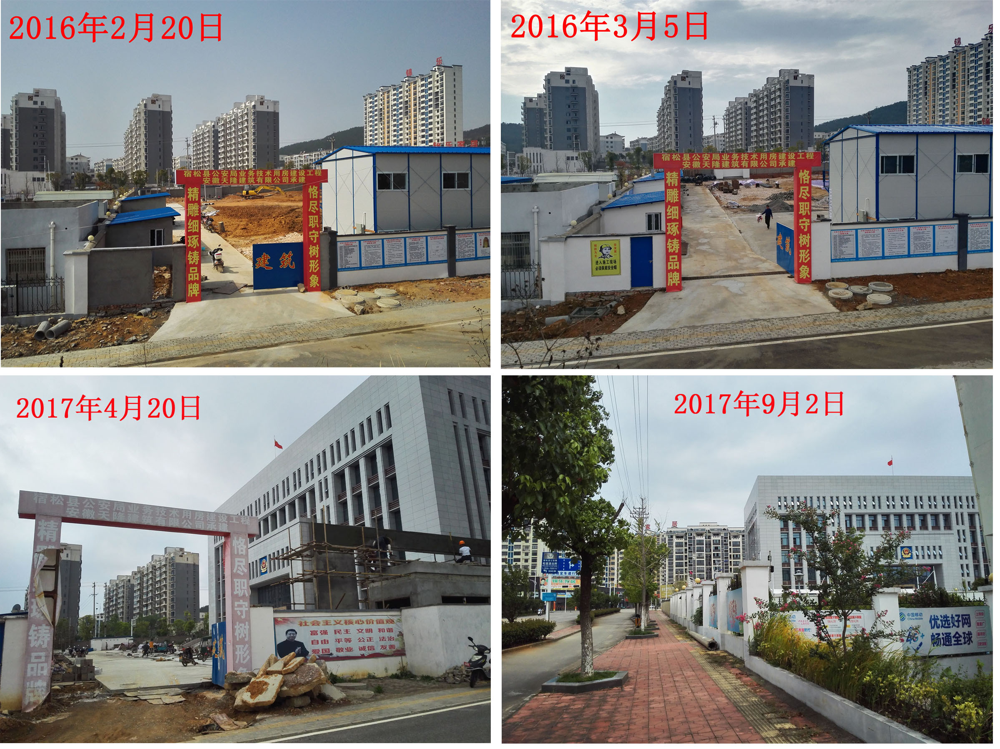
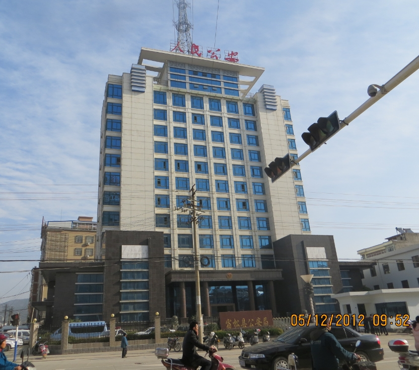

2016年正月已过，又是一年春节过去了，回顾过去，展望未来，宿松县领导党组织上对抗中央政策、下欺压百姓一年更胜一年，近10年来我实时的在网上记录着宿松县领导党组织的所做所为，也让世界见证在中宣部长刘奇葆的家乡真实现状，除了出一个当代中央大人物，这是一个普通得不能再普通的小县城，然而，就是这样一个小县城，十年来公开顶风作案，跟中央对抗，利用警力、公权力血腥压榨百姓的暴虐，在这个法制文明的社会里实在匪夷所思，在高压反腐的习政府，他们有着通天保护伞，无论省里查、南京督查局查、向中央举报、向中纪委举报，他们照样波澜不惊顶风作案，始终跟中央唱反调，从严治民，从宽治党。2015年宿松县新城管理委员会书记贺晓群被实名举报后（其内容包括贺晓群办公室装修花了近千万元人民币，贺晓群挪用公款1千多万，公款大吃大喝，与司法局领导胡XX通奸等等具体细节），安庆市纪委第一时间不是查案，而是第一时间帮贺晓群做假账规避审查。跟他形成鲜明对比的是2015年10月02日下午，宿松熊炜因跪访立即遭政府拘留10天。熊伟的遭遇不是特例，这样的现象在宿松司空见惯，宿松县领导党组织之目无王法是连北京市公安局的文件、公章都敢伪造，宿松县领导党组织以北京对祝和玲训诫为由（训诫书内容和公章均系安庆市伙同宿松县相关部门伪造），对祝和玲进行非法拘留10天，后祝和玲向北京市公安局申请政府信息公开，下为北京市朝阳分局出具的政府信息不存在告知书，此事实清楚，证据充分，而祝和玲就此事起诉，却在宿松法院到安庆中院一直败诉，她已经准备在省高院上诉。

宿松县县委常委张向东在县城龙门路82号盖起一幢七层的店面楼（张有多处房产，仅此一处就价值1千多万。宿松县龙门路是特色街，是宿松官员一条街，整条街高楼林立全是宿松县官员贪污的见证），经南方周末报道，经省纪委调查后没收，可最后张向东又以亲戚朋友的名义搞回来。下图：

在这里我们所看到的只是对官员违法乱纪无底限的宽容，对百姓维权极尽其能的打击报复，宿松，只许官员违法，不许百姓维权，民生如蝼蚁，再苦只能苦人民，再穷也不能穷了宿松县领导党组织，下图为2012年宿松县政府仅主楼就斥资4千万建成豪华县政府办公大楼，详见《见证奢华，继望江白宫后安徽贫困县中的又一座宿松白宫》。

2016年宿松县公安局斥资近2千万新建办公大楼，又对非法违建的宿松法院大楼斥资一千多万装修（老法院大楼新建不到10年，法院领导认为那里风水不好，又新建，他们老是判冤案，到那里风水都不会好）。下为2013年暴打百姓霸占土地，跟中央对抗顶风作案建起的宿松县人民法院大楼，这样的法院谁能揣测他的公正呢？下图就是踏着百姓的鲜血建立起来的法院，血腥的照片不便公开发布。

从2012年习政府宣布本届政府不建新政府楼堂馆所后，宿松县领导党组织一年比一年建的多，跟中央政策对抗，违规乱纪有的是钱，宿松县政务中心的公务员们朝九晚五的住在空调里上班，拿着稳定的工资，还不时发牢骚工作辛苦待遇低。而菜市场的百姓却朝五晚九冬冒寒霜、夏顶烈日朝不保夕生存着，那些发牢骚工作辛苦待遇低的公务员除了福利劳保各种奖金，纯工资都比他们微薄的收入高，公务员们工作辛苦待遇低的参照物不过就是那极少数的技术员或包工头而已，这些包工头技术员行业位置相当于政府部门的领导位置，他们应该去跟他们单位的领导做参照物。也许那中宣部刘奇葆部长高高在上听着繁荣盛世的报告，却看不到宿松百姓生活如此沉重。2016年2月3日（腊月25）在宿松县民生中央城一女子跳楼讨薪，下图：

当然，带头违建的宿松住建局长也在2016年新年乔迁进非法违建的15层豪华办公大楼，至此，宿松县住建局不但每个职工都可以独立办公室，哪怕是把他们家里所有人都加起来也可以每人一个办公室，反正党组织有的是钱，这是宿松各单位的普遍现象。对民生没钱，对党组织可是花不完的，反正宿松县领导搞建设发展的能力没有，暴力压榨百姓的权力多的是，谁不服，有公安局、法院撑腰，自有宿松警察要你服。

下图为2013年宿松县公安局顶风作案的交警队办公楼

下图为2016年动工新建的公安局大楼，而宿松法院、宿松公安局老的办公大楼建起不到10年

老宿松县公安局大楼于2005年8月18日动工兴建，2007年5月26日竣工，总投资2000余万元。大楼是宿松县标志性建筑之一，共15层，总高度51米，建筑面积10000平方米。建成至今不到10年，且楼多人少，至今尚有空房未使用，如下图：
